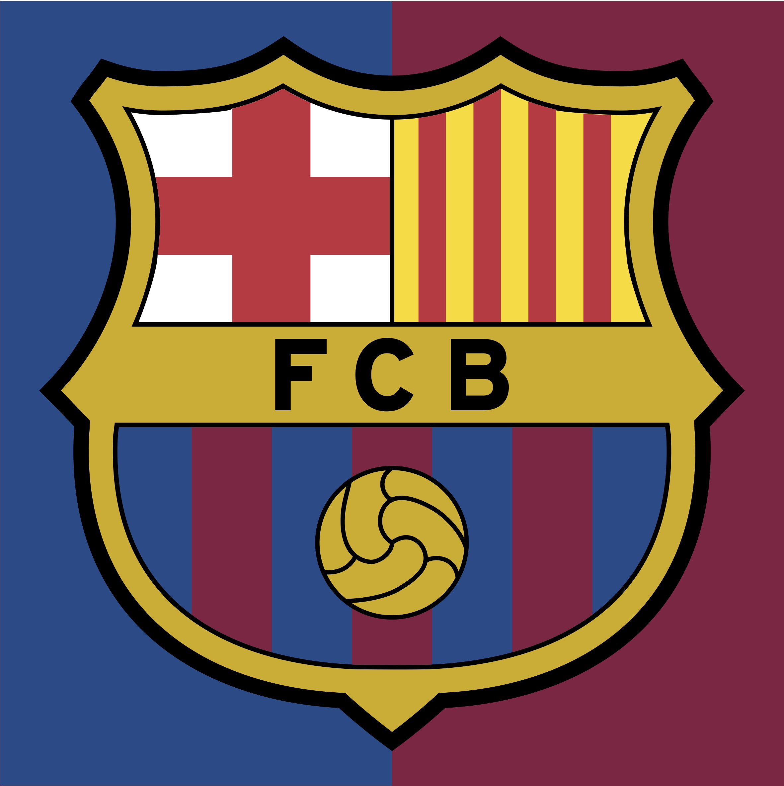

Volleyball is a team sport in which two teams of six players are separated by a net. Each team tries to score points by grounding a ball on the other team's court under organized rules. It has been a part of the official program of the Summer Olympic Games since 1964. The complete rules are extensive, but simply, play ...

Swimming is an individual or team sport that requires the use of ones arms and legs to move the body through water. The sport takes place in pools or open water Competitive swimming is one of the most popular Olympic sports, with varied distance events in butterfly, backstroke, breaststroke, freestyle, and individual ...
Basketball is a limited-contact sport played on a rectangular court. While most often played as a team sport with five players on each side, three-on-three, two-on-two, and one-on-one competitions are also common. The objective is to shoot a basketball (approximately 9.4 inches (24 cm) in diameter) through a hoop 18 ...
Baseball is a bat-and-ball game played between two opposing teams who take turns batting and fielding. The game proceeds when a player on the fielding team, called the pitcher, throws a ball which a player on the batting team tries to hit with a bat. The objectives of the offensive team (batting team) are to hit the ball into ...